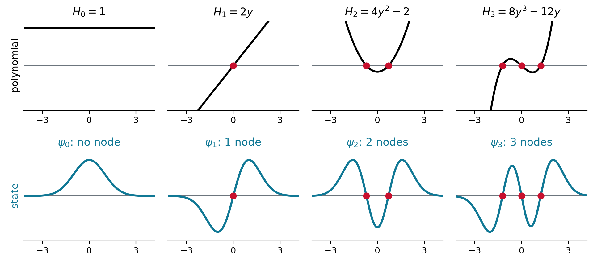
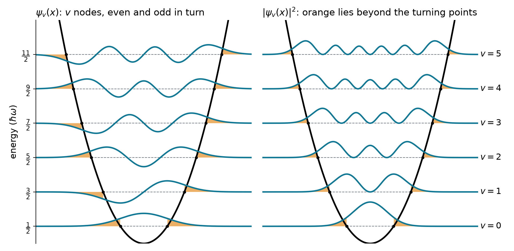
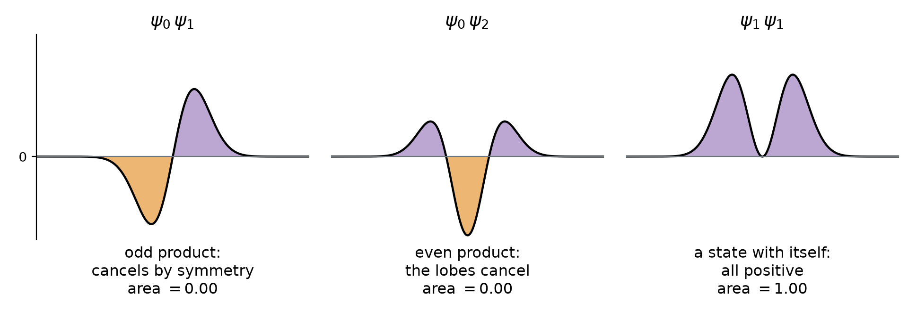
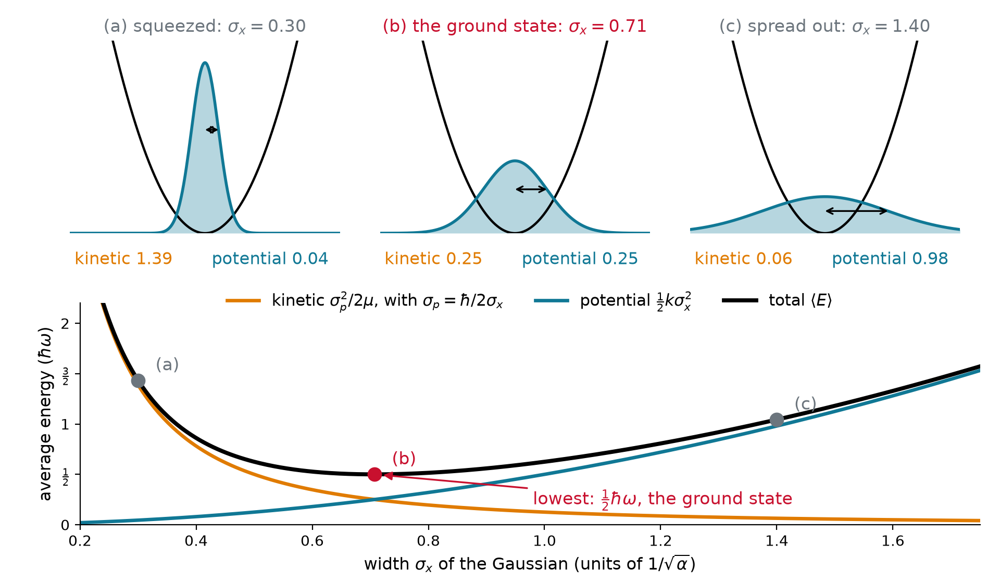
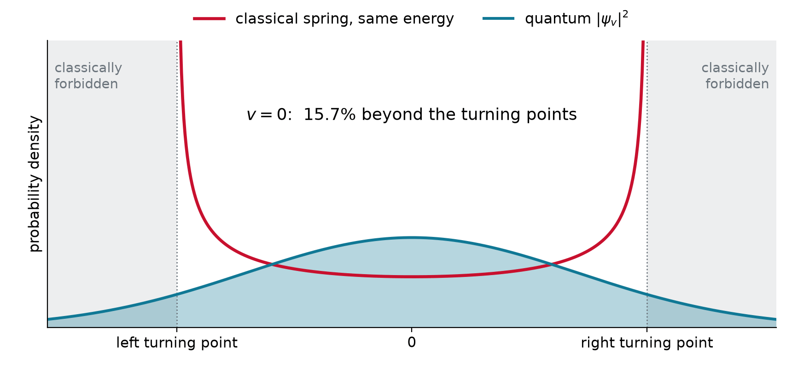
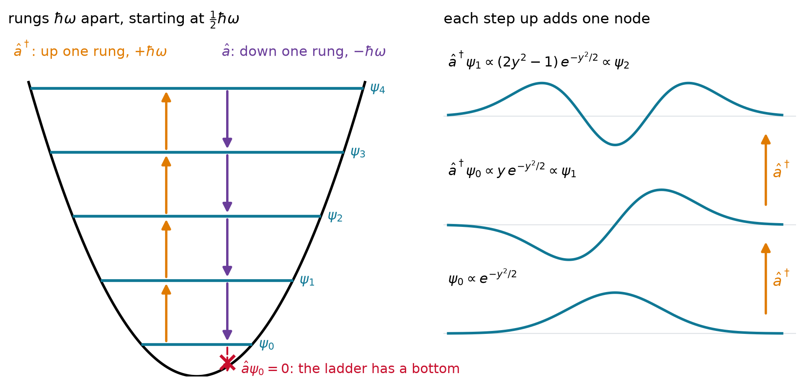
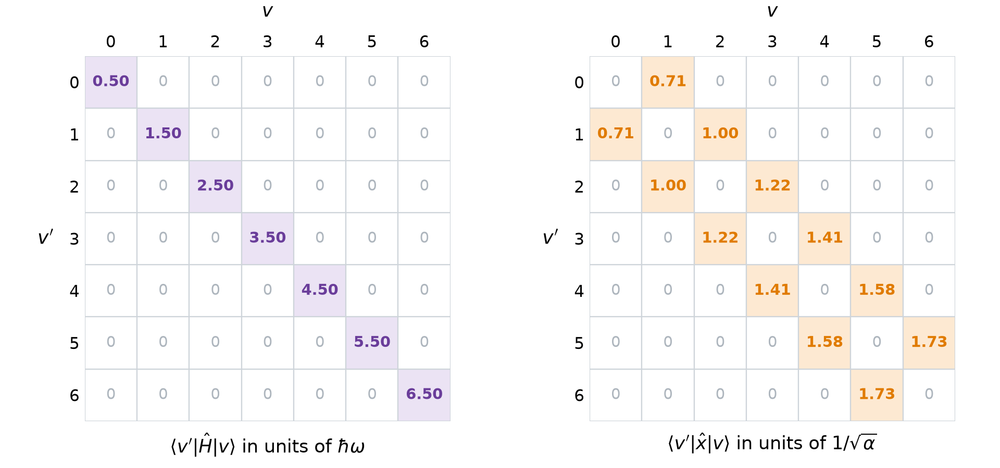

Chem 3240 · Lecture 4.2
\hat{H} = -\frac{\hbar^2}{2\mu}\frac{d^2}{dx^2} + \frac{1}{2}kx^2, \qquad \hat{H}\psi_v = E_v\,\psi_v
\hat{H} contains only \hbar, \mu and k: they build one energy and one length
Energy: a photon at the spring’s frequency (E = h\nu, Chapter 1): \quad\hbar\omega = \hbar\sqrt{k/\mu}
Length: where squeezing costs as much kinetic energy as stretching costs potential
\frac{\hbar^2}{\mu L^2} = kL^2 \quad\Longrightarrow\quad L^4 = \frac{\hbar^2}{\mu k} = \frac{\hbar^2}{\mu\cdot\mu\omega^2} = \left(\frac{\hbar}{\mu\omega}\right)^2
With k = \mu\omega^2 the right side is a square, and the fourth root of a square is a square root:
L = \sqrt{\frac{\hbar}{\mu\omega}} \equiv \frac{1}{\sqrt{\alpha}}
For HCl, k = 516 N/m and \mu = 1.627\times10^{-27} kg. Find \hbar\omega and 1/\sqrt{\alpha}, and compare with the 127.5 pm bond.
\omega = \sqrt{k/\mu} = 5.63\times10^{14}\ \text{s}^{-1}, \qquad \hbar\omega = 0.371\ \text{eV} = 2990\ \text{cm}^{-1}
\frac{1}{\sqrt{\alpha}} = \sqrt{\frac{\hbar}{\mu\omega}} = 10.7\ \text{pm}, \quad \text{8\% of the bond}
E_v = \hbar\omega\left(v + \frac{1}{2}\right), \qquad v = 0, 1, 2, \dots
\psi_v(x) = N_v\,H_v\!\left(\sqrt{\alpha}\,x\right)e^{-\alpha x^2/2}, \qquad \alpha = \frac{\mu\omega}{\hbar}
\psi_v(x) = \left(\frac{\alpha}{\pi}\right)^{1/4} \times \frac{H_v(y)}{\sqrt{2^v v!}} \times e^{-y^2/2}, \qquad y = \sqrt{\alpha}\,x
| v | H_v(y) | normalized: H_v(y)/\sqrt{2^v v!} |
|---|---|---|
| 0 | 1 | 1 |
| 1 | 2y | \sqrt{2}\,y |
| 2 | 4y^2 - 2 | \frac{1}{\sqrt{2}}\left(2y^2 - 1\right) |
| 3 | 8y^3 - 12y | \frac{1}{\sqrt{3}}\left(2y^3 - 3y\right) |
| 4 | 16y^4 - 48y^2 + 12 | \frac{1}{2\sqrt{6}}\left(4y^4 - 12y^2 + 3\right) |
H_{v+1}(y) = 2y\,H_v(y) - 2v\,H_{v-1}(y) \qquad \text{(each one from the two before it)}

Show that \psi_0 = e^{-\alpha x^2/2} solves \hat{H}\psi_0 = E_0\psi_0 only for \alpha = \mu\omega/\hbar, and find E_0.
\psi_0'' = \left(\alpha^2x^2 - \alpha\right)\psi_0 \quad\Longrightarrow\quad \hat{H}\psi_0 = \left[\frac{\hbar^2\alpha}{2\mu} + \left(\frac{k}{2} - \frac{\hbar^2\alpha^2}{2\mu}\right)x^2\right]\psi_0
The x^2 term must vanish: \hbar^2\alpha^2/\mu = k, so \alpha = \mu\omega/\hbar, and what is left is
E_0 = \frac{\hbar^2\alpha}{2\mu} = \frac{1}{2}\hbar\omega

\psi_v(-x) = (-1)^v\,\psi_v(x)
\langle x\rangle = \int\psi_v\,x\,\psi_v\,dx = 0, \qquad \langle p\rangle = -i\hbar\int\psi_v\,\psi_v'\,dx = 0
The integrand of \langle v'\vert\hat{A}\vert v\rangle has three factors: its parity is bra \times operator \times ket
Odd operators flip a state’s parity: \hat{x}, \hat{p}. Even operators keep it: \hat{x}^2, \hat{p}^2, \hat{H}
| sandwich | integrand | integral | example |
|---|---|---|---|
| \langle\text{even}\vert\,\text{odd}\,\vert\text{even}\rangle | odd | 0 | \langle 2\vert\hat{x}\vert 4\rangle = 0 |
| \langle\text{odd}\vert\,\text{odd}\,\vert\text{odd}\rangle | odd | 0 | \langle 1\vert\hat{p}\vert 3\rangle = 0 |
| \langle\text{even}\vert\,\text{even}\,\vert\text{odd}\rangle | odd | 0 | \langle 0\vert\hat{x}^2\vert 1\rangle = 0 |
| \langle\text{even}\vert\,\text{odd}\,\vert\text{odd}\rangle | even | can survive | \langle 2\vert\hat{x}\vert 3\rangle \neq 0 |
| \langle\text{odd}\vert\,\text{even}\,\vert\text{odd}\rangle | even | can survive | \langle 1\vert\hat{x}^2\vert 1\rangle \neq 0 |

\langle v'|v\rangle = \int_{-\infty}^{\infty}\psi_{v'}\,\psi_v\,dx = \delta_{v'v}
The ladder starts at \frac{1}{2}\hbar\omega. Why can’t a bond sit still at E = 0?
1. Average of \hat{H}: kinetic plus potential
\langle E\rangle = \frac{\langle p^2\rangle}{2\mu} + \frac{1}{2}k\langle x^2\rangle
2. Centered state (\langle x\rangle = \langle p\rangle = 0): \langle x^2\rangle = \sigma_x^2 and \langle p^2\rangle = \sigma_p^2
3. Uncertainty: \sigma_p \geq \hbar/2\sigma_x, with equality for a Gaussian
\langle E\rangle \;\geq\; \frac{\hbar^2}{8\mu\sigma_x^2} + \frac{1}{2}k\sigma_x^2

\psi_0(x) = \left(\frac{\alpha}{\pi}\right)^{1/4}e^{-\alpha x^2/2}, \qquad E_0 = \frac{1}{2}\hbar\omega, \qquad \alpha = \frac{\mu\omega}{\hbar}
For HCl, \hbar\omega is 2990 cm^{-1} (0.371 eV) and the bond well is D_e = 4.62 eV deep. Find E_0, and the energy needed to break the bond from v = 0.
E_0 = \tfrac{1}{2}\hbar\omega = 1495\ \text{cm}^{-1} = 0.185\ \text{eV}
D_0 = D_e - E_0 = 4.62 - 0.19 = 4.43\ \text{eV} \quad\text{(measured: 4.43 eV)}
C-H stretch: 2900 cm^{-1}. C-D: same force constant, \mu from 0.930 to 1.725 u. A reaction breaks this bond: how much slower is C-D at 300 K (k_BT = 208 cm^{-1})?
\tilde{\nu}_{\text{CD}} = 2900\sqrt{\frac{0.930}{1.725}} = 2130\ \text{cm}^{-1}, \qquad \Delta E_0 = \tfrac{1}{2}(2900 - 2130) = 385\ \text{cm}^{-1}
\frac{k_{\text{H}}}{k_{\text{D}}} \approx e^{385/208} \approx 6
The v = 0 turning points are at x = \pm 1/\sqrt{\alpha}, that is y = \pm 1. How often is the oscillator found beyond them?
With \lvert\psi_0\rvert^2dx = \pi^{-1/2}e^{-y^2}dy:
P(\text{beyond}) = 1 - \frac{1}{\sqrt{\pi}}\int_{-1}^{1} e^{-y^2}\,dy = 0.157
About one time in six: stretched where a classical spring could never reach.

In y = \sqrt{\alpha}\,x the constants drop out, and every oscillator is one problem:
\hat{H} = \frac{\hbar\omega}{2}\left(y^2 - \frac{d^2}{dy^2}\right)
Numbers factor a sum of squares, u^2 + w^2 = (u - iw)(u + iw). Try the same with
\hat{a} = \frac{1}{\sqrt{2}}\left(y + \frac{d}{dy}\right), \qquad \hat{a}^\dagger = \frac{1}{\sqrt{2}}\left(y - \frac{d}{dy}\right)
Multiplying out gives the Hamiltonian back, plus one leftover term:
\hat{H} = \hbar\omega\left(\hat{a}^\dagger\hat{a} + \frac{1}{2}\right)
\hat{H} = \hbar\omega\left(\hat{a}^\dagger\hat{a} + \frac{1}{2}\right), \qquad [\hat{a}, \hat{a}^\dagger] = 1
Use \hat{a}\hat{a}^\dagger = \hat{a}^\dagger\hat{a} + 1:
\hat{H}\hat{a}^\dagger = \hbar\omega\left(\hat{a}^\dagger\hat{a}\hat{a}^\dagger + \tfrac{1}{2}\hat{a}^\dagger\right) = \hat{a}^\dagger\left(\hat{H} + \hbar\omega\right)
\hat{H}\psi = E\psi \quad\Longrightarrow\quad \hat{H}\left(\hat{a}^\dagger\psi\right) = \left(E + \hbar\omega\right)\left(\hat{a}^\dagger\psi\right)
\hat{a}\psi_0 = 0 \quad\Longrightarrow\quad \frac{d\psi_0}{dy} = -y\,\psi_0 \quad\Longrightarrow\quad \psi_0 \propto e^{-y^2/2}

\hat{a}^\dagger\psi_v = \sqrt{v + 1}\,\psi_{v+1}, \qquad \hat{a}\,\psi_v = \sqrt{v}\,\psi_{v-1}, \qquad \hat{a}\,\psi_0 = 0
\hat{x} = \frac{\hat{a} + \hat{a}^\dagger}{\sqrt{2\alpha}}, \qquad \hat{x}\,\psi_v = \frac{1}{\sqrt{2\alpha}}\left(\sqrt{v + 1}\,\psi_{v+1} + \sqrt{v}\,\psi_{v-1}\right)

\langle v'|\hat{x}|v\rangle = 0 \quad\text{unless}\quad v' = v \pm 1
A vibrating bond is a quantum spring with evenly spaced levels E_v = \hbar\omega\left(v + \frac{1}{2}\right). The ground state is a Gaussian with zero-point energy \frac{1}{2}\hbar\omega, the least the uncertainty principle allows. The states are Hermite polynomials times that Gaussian, with v nodes and alternating parity. Raising and lowering operators explain the equal steps, and \hat{x} = (\hat{a} + \hat{a}^\dagger)/\sqrt{2\alpha} connects only neighboring levels: the infrared selection rule \Delta v = \pm 1.
Chem 3240 · Quantum Mechanics